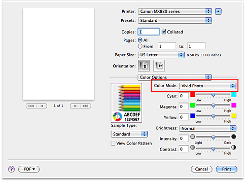

The procedure for performing Vivid Photo is as follows:
-
Select Color Options from the pop-up menu on the Print Dialog
-
Select color mode
Select Vivid Photo for Color Mode.
 -
Complete the setup
Click Print.
When you execute print, the image will be printed with vivid colors.
 Important
Important
-
If you are using the CUPS driver (Mac OS X v.10.6.x or Mac OS X v.10.5.x) and you select ColorSync for Color Matching, then Color Mode appear grayed out and is unavailable.
-
With the printer driver (Mac OS X v.10.5.x), the vivid photo function will be disabled when you select ColorSync from the Color Matching, even when Vivid Photo is selected.
-
With Mac OS X v.10.4.11, the vivid photo function will be disabled when you select ColorSync from the Color Correction menu in the Color Options dialog, even when Vivid Photo is selected.
 Note
Note
-
When you are using the printer driver (Mac OS X v.10.5.x, Mac OS X v.10.4.11), you can select Special Effects on the pop-up menu of the Print dialog, and then set Vivid Photo.